Violinist · Siem Reap, Cambodia
Available for concerts, private events, cultural programmes, and artistic collaborations across Southeast Asia and beyond.
EnquireSimon Gilbert is a classically trained violinist with a conservatoire background in Belgium, now based in Siem Reap, Cambodia. Over the course of a performing career that has taken him across Europe and Southeast Asia, he has developed a practice rooted in discipline, careful listening, and a refusal to separate technical precision from artistic intent.
His performing work spans three distinct registers — live electronic soundscapes, jazz, and classical repertoire — each approached with the same seriousness and the same conviction: that music communicates most when it is not trying to impress.
He has performed at Raffles Grand Hotel d’Angkor, Anantara Angkor Resort, Sofitel Phokeethra, and Rose Apple Siem Reap; for the Epidemick Gallery in Phnom Penh in the presence of members of the Royal Family; and on multiple occasions for the Chamber of Commerce of Cambodia. In November 2026, he serves as Musical Director for L’Ami Fidèle, a children’s opera presented at the Francophonie Summit.
Enquiries are welcome from cultural institutions, private event organisers, luxury hospitality groups, galleries, and artists seeking a musician of seriousness and range.
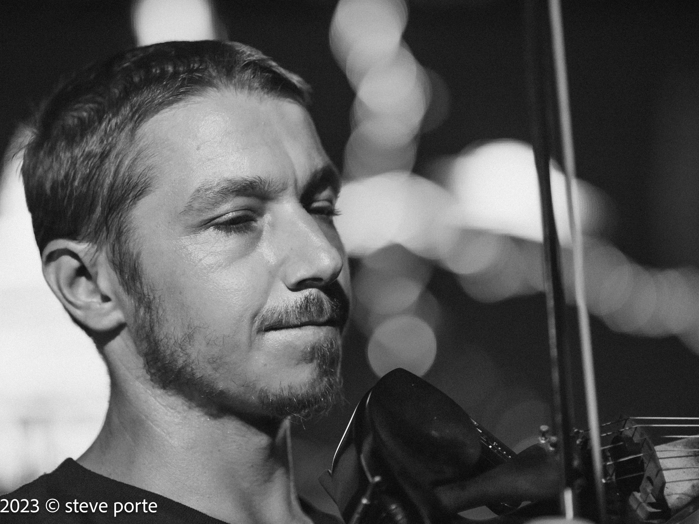
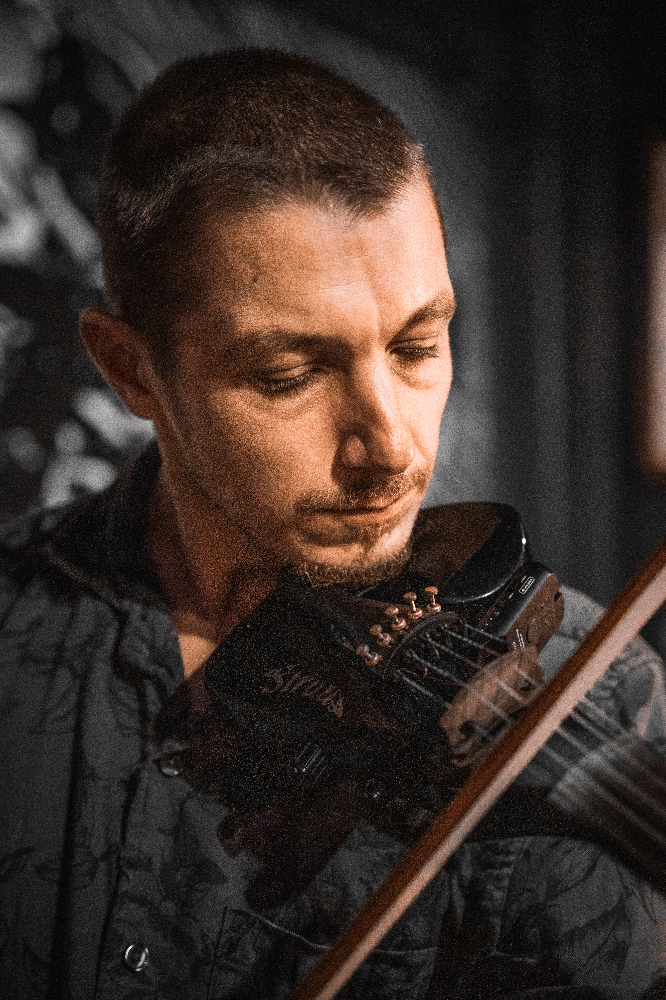
Signature Project
What happens when there is nowhere to hide.
Anima is Simon Gilbert’s solo live performance project. Using a 7-string electric violin and a BOSS RC-505 MkII loop station, he builds original soundscapes entirely in real time — layer by layer, phrase by phrase, with no backing tracks, no pre-recorded material, and no safety net.
Every performance is unrepeatable. Every sound is created in the moment it is heard. Because the music is constructed live and in public, there is no possibility of concealment — not musically, not technically, not emotionally. What goes in is what comes out. Even mistakes are part of the fabric.
The result moves between atmosphere and intensity, between stillness and accumulation. Audiences have described it as trance-like. That is not far from how it feels to perform it.
Anima is suited to cultural events, gallery openings, private occasions where something genuinely unusual is called for, and any context where the distinction between musician and music matters.
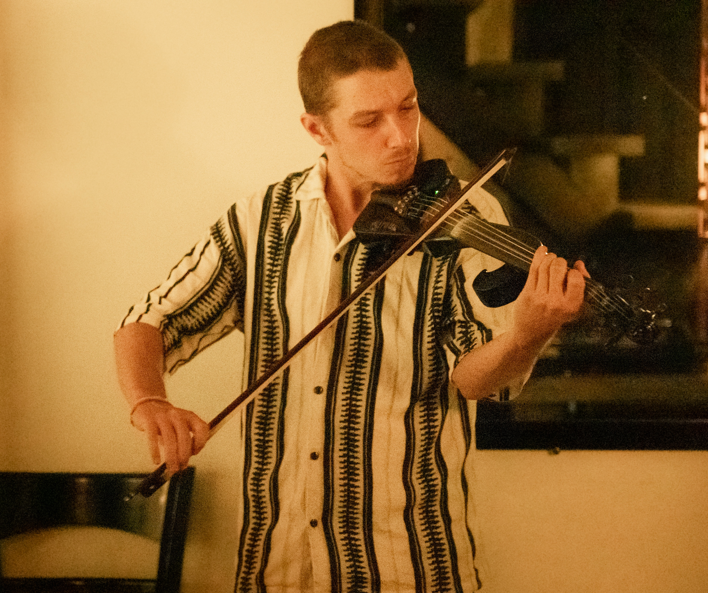
A performance of Anima is not background. It is an event.
Simon Gilbert performs jazz repertoire on electric violin — standards, improvisations, and original arrangements — in solo format or with ensemble. His jazz playing draws on a classical foundation while inhabiting the idiom fully: melodic invention, rhythmic fluency, and the conversational quality that live jazz demands.
Past jazz performances include regular residencies in Siem Reap, festival appearances, and ensemble work in various configurations. The electric violin — capable of warmth, bite, and everything between — is his primary instrument in this context.
Available as a solo performer or in collaboration with other musicians.
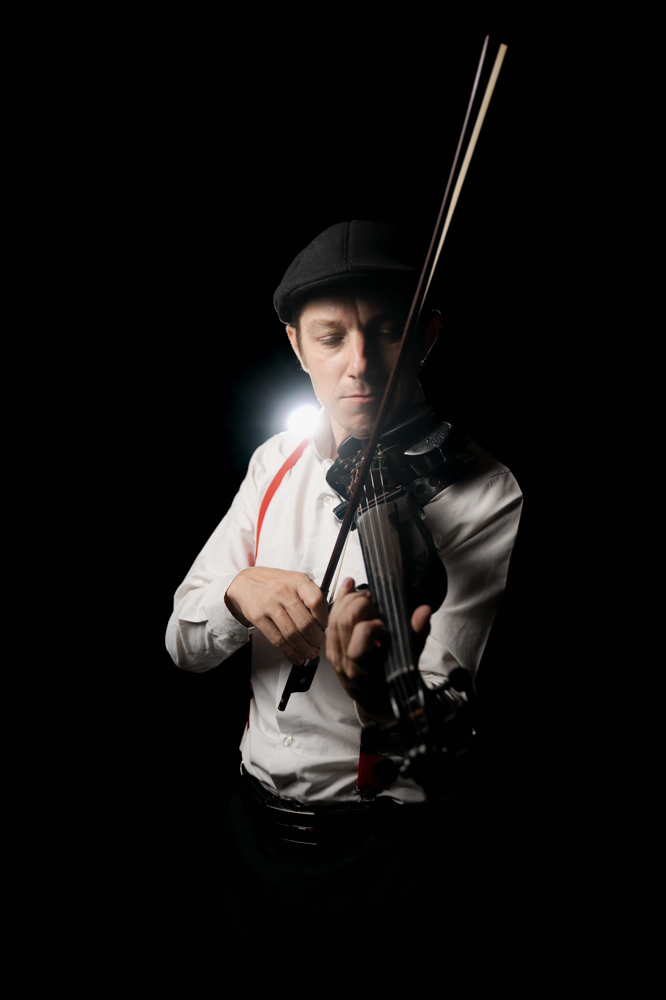
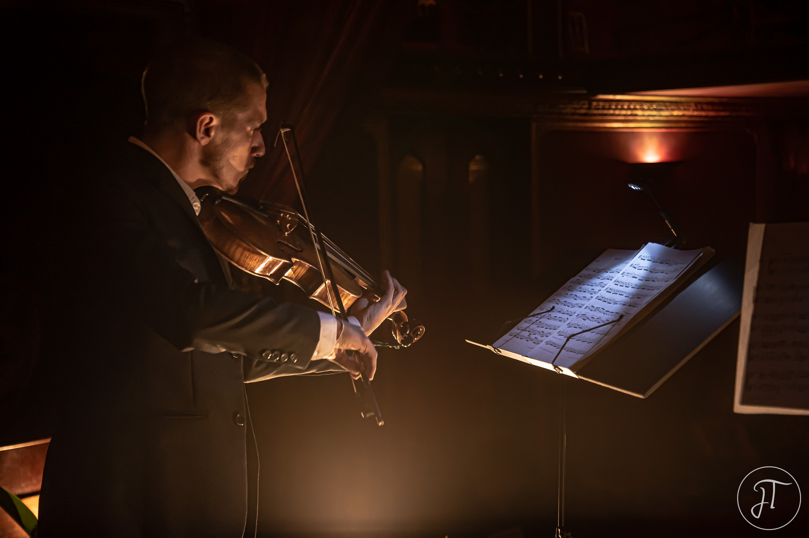
Classically trained at the Conservatoire Royal de Musique de Liège, Simon Gilbert brings conservatoire-level rigour to acoustic violin performance. His classical repertoire spans the baroque and romantic traditions, performed with the precision and interpretive care that serious musical study develops over years.
Classical performances are offered in solo format or with accompaniment, and are suited to formal concert contexts, institutional events, and private occasions requiring acoustic refinement.
Raffles Grand Hotel d’Angkor · Anantara Angkor Resort · Sofitel Phokeethra · Rose Apple Siem Reap
Epidemick Gallery, Phnom Penh (in the presence of H.R.H. members of the Royal Family of Cambodia)
Chamber of Commerce of Cambodia · Apsara Theatre, Siem Reap
Musical Director — L’Ami Fidèle, Francophonie Summit, November 2026
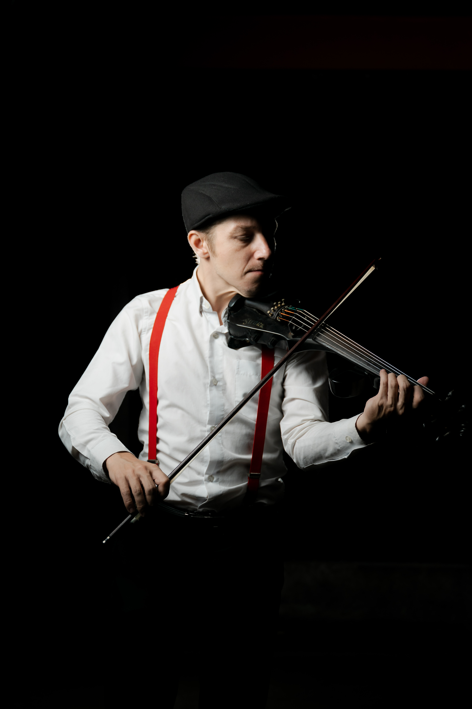
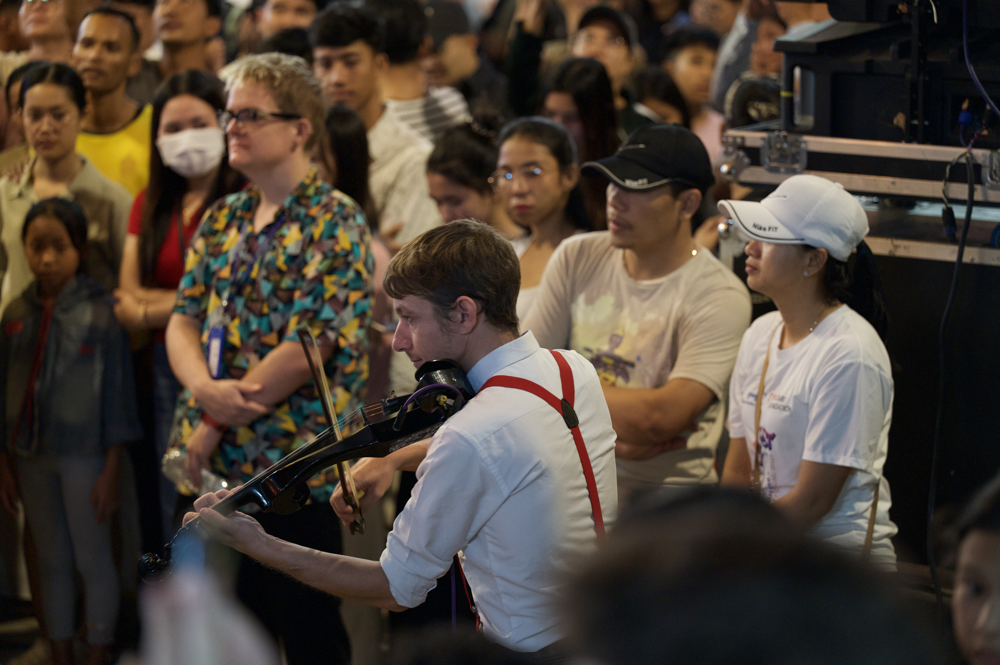
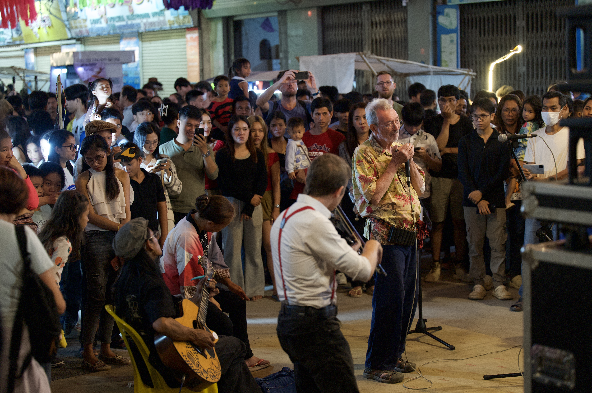
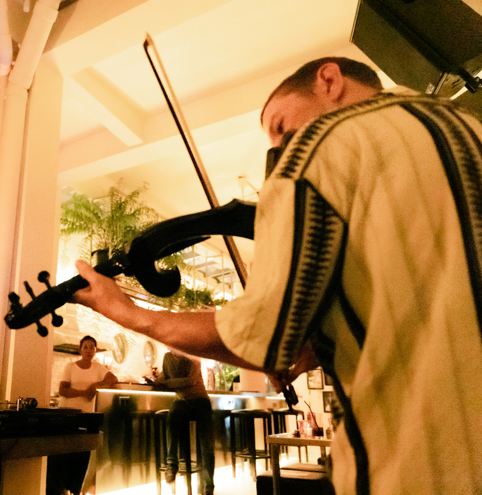
For availability, programme information, and booking, please get in touch directly.
ContactLive looping · Jazz · Classical
Discover →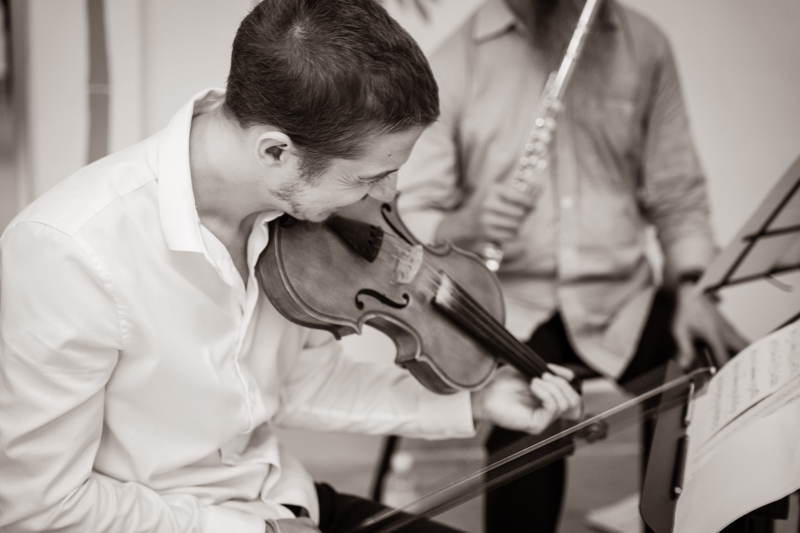
Violin · Composition
Discover →At Ars Musica Studio, music is not approached as a sequence of notes to be mastered, but as a language of touch, breath, and listening. Our teaching invites each student — beginner or advanced — to slow down, to feel, and to explore the expressive depth that lies within sound. Rooted in classical tradition, yet guided by personal attention and care, we believe true musicianship emerges through sensitivity, structure, and the quiet work of transformation.
Ars Musica Studio offers private instruction across several musical disciplines, each taught with the same commitment to depth, care, and long-term growth.
Violin — Private lessons rooted in classical tradition, open to beginners and advancing students of all ages.
Composition — Individual guidance for students who wish to develop their own musical voice, grounded in the study of counterpoint, form, and musical language.
Each discipline is taught one-on-one, structured by term, and governed by the same commitment-based principles that define the studio.
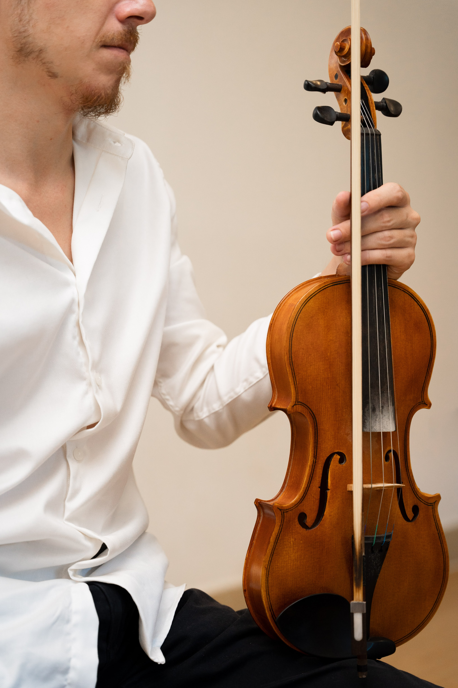
Ars Musica Studio is not a place for passing time. It is a space for those who wish to engage seriously with music — whatever their instrument, whatever their starting point. What matters here is not how much you already know, but how willing you are to learn with patience and honesty. Students are expected to show up prepared, to practice with intention, and to treat their musical growth as a long-term commitment. If you are looking for quick results or a casual experience, this may not be the right studio for you. But if you are ready to begin something lasting and quietly transformative, we welcome your interest.
This is not a fast track. It is a meaningful path.At Ars Musica Studio, we believe that music deserves both care and clarity — not only in how it is taught, but in how it is valued. That is why the studio operates on a commitment-based pricing model. Rather than setting a single fixed rate, lesson fees are adjusted term by term according to each student's demonstrated dedication. This includes factors such as attendance, preparation, instrument care, progress, and overall engagement. This approach allows tuition to reflect the spirit of the work. Students who practice regularly, show steady improvement, and respect their musical growth may be eligible for lower rates. Those who are less consistent are still welcome, but are asked to support the time and attention their lessons require at a higher tier. The system is transparent, kind, and designed to encourage responsibility, not to punish. It is reviewed together with the student or family at the end of each term.
Because care should be reciprocal — and music is not a product, but a relationship.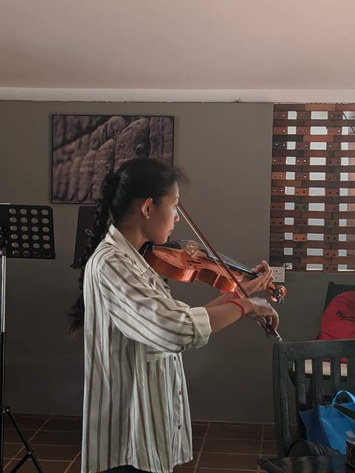
At Ars Musica Studio, greater commitment means lower rates. Students who engage seriously with their practice and lessons are rewarded with reduced tuition — because dedication deserves to be recognised.
| Tier | Title | Description |
|---|---|---|
| Tier 1 | Tier 1 — Exceptional Commitment | Exemplary dedication, practice, rapid progress, full respect for schedule and instrument care. A model student. |
| Tier 2 | Tier 2 — Strong Commitment | Regular practice, excellent attendance, visible progress and a positive, attentive attitude in lessons. |
| Tier 3 | Tier 3 — Consistent Engagement | Shows up prepared most weeks, some practice lapses, good attitude, consistent improvement. |
| Tier 4 | Tier 4 — Moderate Engagement | Engaged but inconsistent, occasional practice, minor issues with attendance or preparation. |
| Tier 5 | Tier 5 — Low Engagement | Rarely prepared, misses lessons frequently, minimal progress or unclear commitment. |
| Tier 6 | Tier 6 — Minimal Commitment | Minimal effort or preparation, recurring cancellations, unclear goals or disinterest. |
If the philosophy of Ars Musica Studio resonates with you, the first step is a simple one: reach out. You may use the Contact page to introduce yourself or your child. Share a few words about your background, your experience (if any), and your motivation for joining the studio. There is no need to impress — only to be honest. After this — or if you are already certain you wish to proceed — you may schedule a first meeting or trial lesson. This is not an audition, but a conversation in sound: an opportunity for both teacher and student to explore whether the studio is the right fit. Please note that spaces are limited, and we may not be able to accept all enquiries immediately. This is not meant to exclude, but to protect the integrity and care each student deserves.
Every serious journey begins with a quiet step.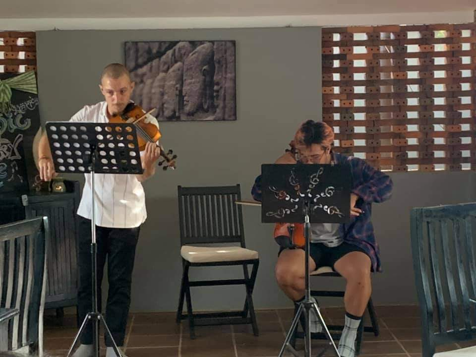
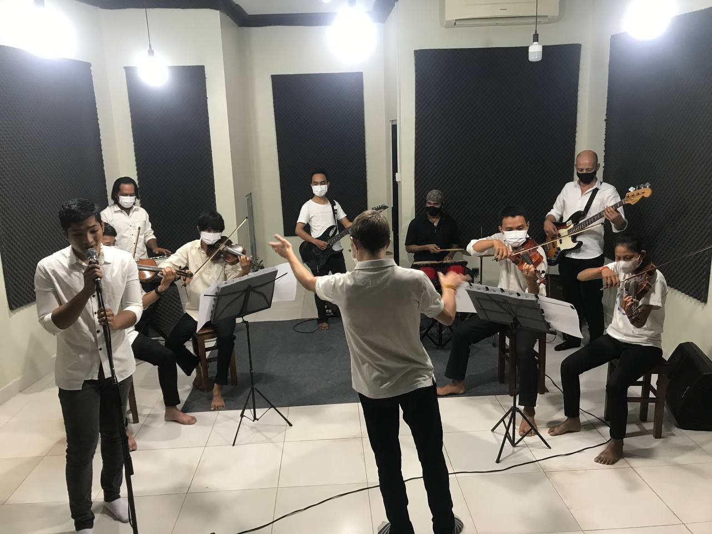
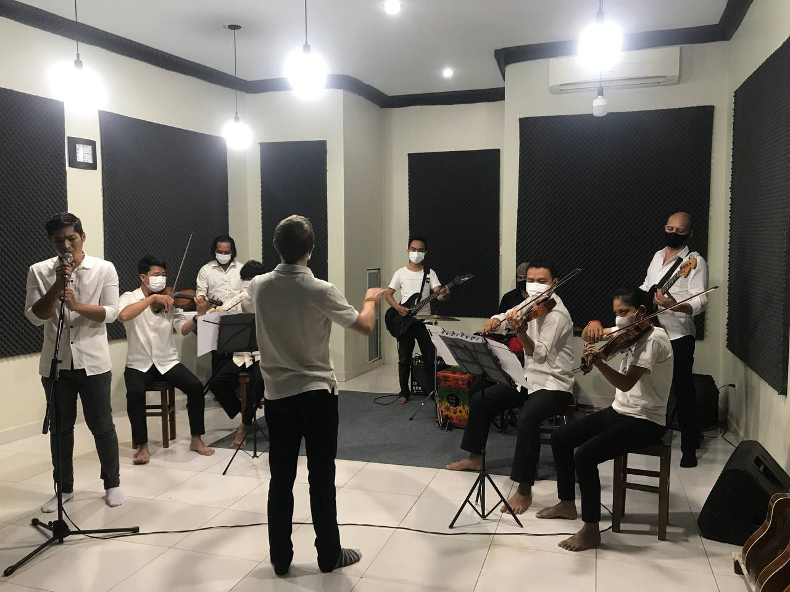
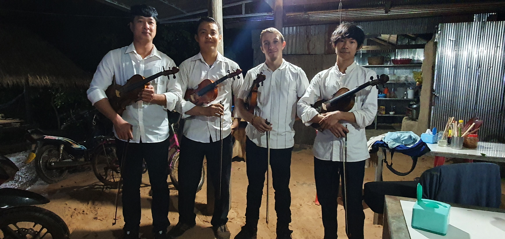
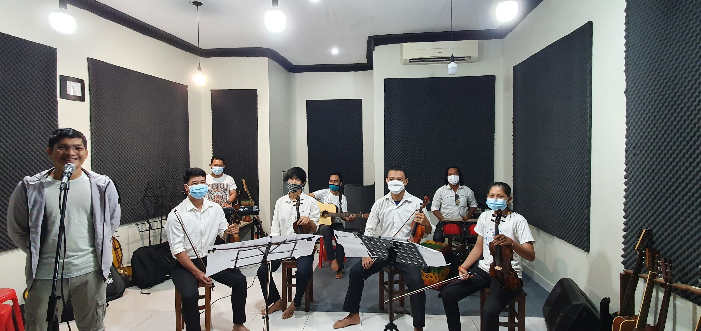
The violin is the heart of Ars Musica Studio — and the instrument through which its teaching philosophy was built.
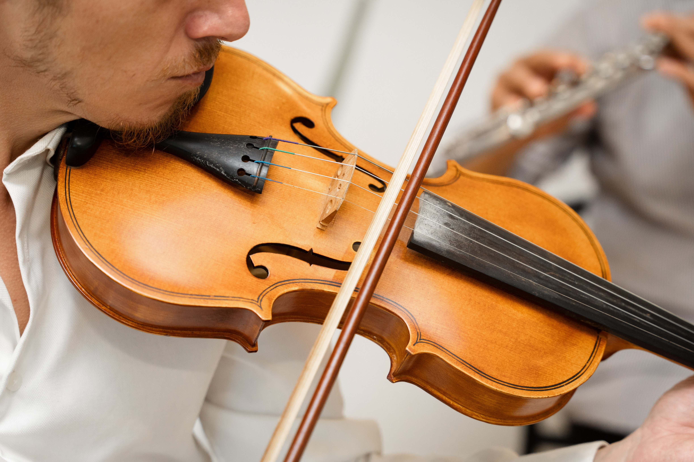
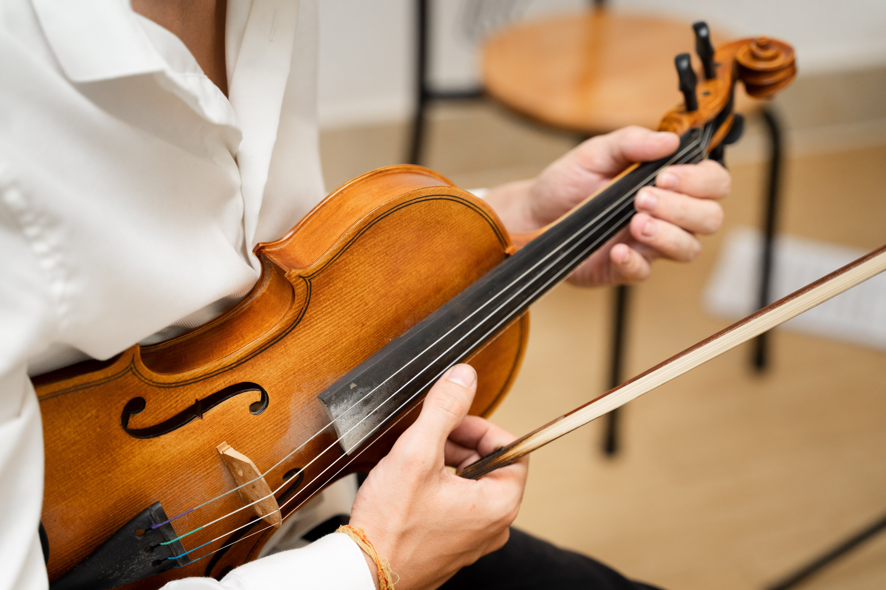
Private violin lessons at Ars Musica Studio are taught one-on-one, with a structure tailored to the individual student. Whether you are a complete beginner or a more advanced player, instruction is shaped by your level, your pace, and your musical goals. Technique, repertoire, music literacy, and ear training are developed together — not as separate subjects, but as dimensions of a single, unified practice.
Violin instruction at Ars Musica Studio covers the full spectrum of musical development:
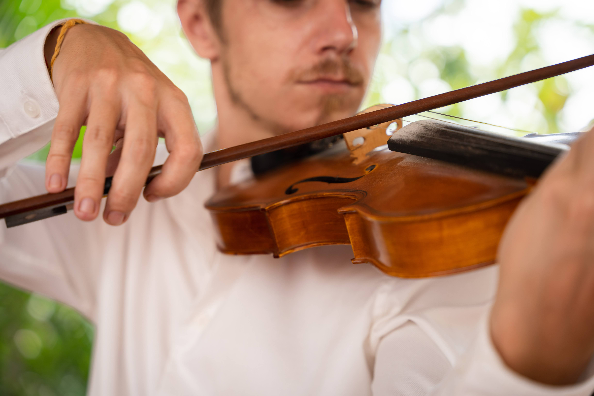
Bow hold, left hand position, tone production, intonation, and the gradual refinement of physical awareness at the instrument.
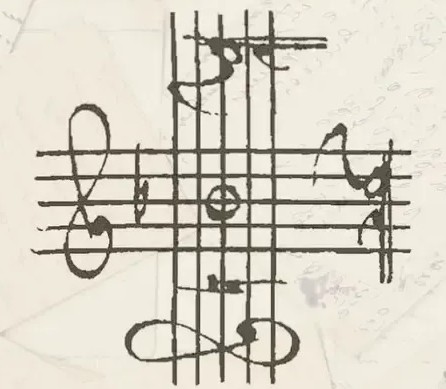
Pieces chosen to match your level and stretch your expressive range, drawn primarily from the classical and baroque traditions.
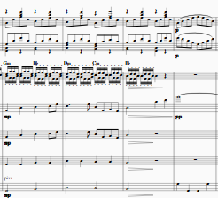
Reading notation, understanding rhythm, and developing independence on the page.
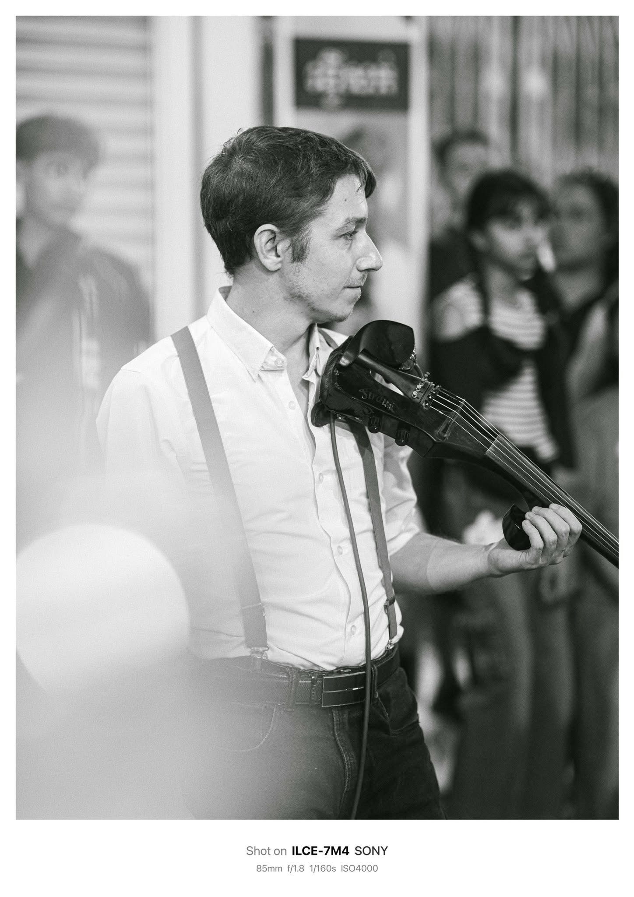
Listening carefully to pitch, tone, and phrasing, both in your own playing and in the music around you.
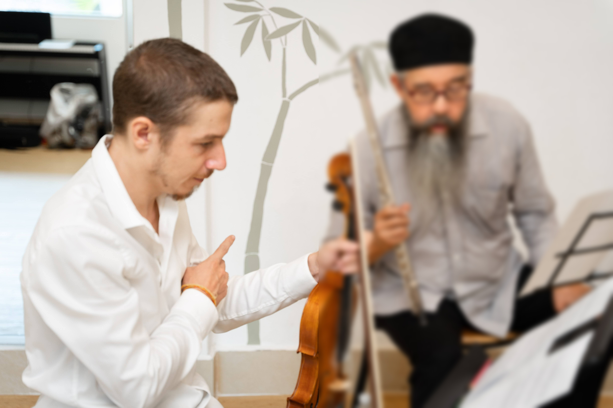
Learning not only how to play, but why music is structured the way it is.
Progress is cumulative and unhurried. Each element reinforces the others — because musicianship is not a checklist, but a language being slowly acquired.
Violin lessons at Ars Musica Studio are open to:
What is asked of every student is the same: seriousness of intent, consistency of effort, and a willingness to listen. No prior experience is required. No audition is necessary. What matters is not where you start — but your readiness to commit to the work.
Violin lesson rates are determined by the student's commitment tier, reviewed at the end of each term. Greater engagement means lower tuition.
| Tier | Description | Rate |
|---|---|---|
| Tier 1 — Exceptional Commitment | Exemplary dedication, daily practice, rapid progress, full respect for schedule and instrument care. | $20/h |
| Tier 2 — Strong Commitment | Regular practice, excellent attendance, visible progress and a positive, attentive attitude in lessons. | $22.50/h |
| Tier 3 — Consistent Engagement | Shows up prepared most weeks, some practice lapses, good attitude, consistent improvement. | $25/h |
| Tier 4 — Moderate Engagement | Engaged but inconsistent, occasional practice, minor issues with attendance or preparation. | $27.50/h |
| Tier 5 — Low Engagement | Rarely prepared, misses lessons frequently, minimal progress or unclear commitment. | $30/h |
| Tier 6 — Minimal Commitment | Minimal effort or preparation, recurring cancellations, unclear goals or disinterest. | $35/h |
If violin study at Ars Musica Studio feels like the right fit, the first step is simple: get in touch. You may use the Contact page to introduce yourself or your child. Share a few words about your background, your experience with the instrument if any, and what draws you to begin. There is no need to impress — only to be honest.
Every serious journey begins with a quiet step.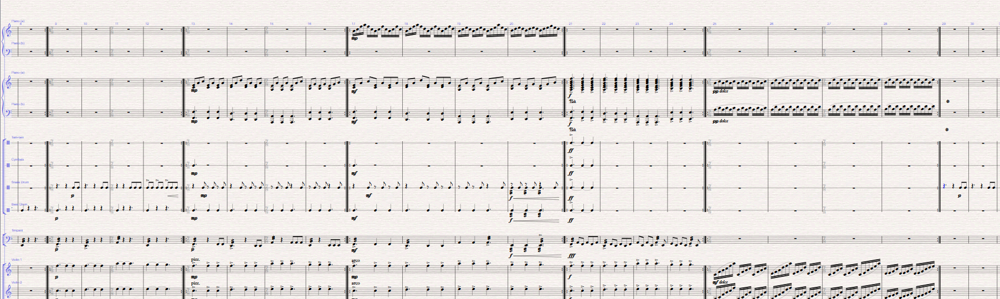
Composition is the art of giving form to musical thought. At Ars Musica Studio, it is taught not as a technical exercise, but as a discipline of listening, thinking, and making — guided by the same principles of care and rigour that shape all the work here.
Private composition lessons offer each student a structured yet personal path into the craft of musical writing. Rooted in the study of harmony, counterpoint, musical form, and the evolution of musical language from tonal to atonal, instruction is shaped as much as possible by the student's own musical interests and references — while ensuring that what is learned extends beyond personal taste into a genuine understanding of how music works. The goal is not imitation, but formation: to give each student the tools, the vocabulary, and the ear to develop an original musical voice.
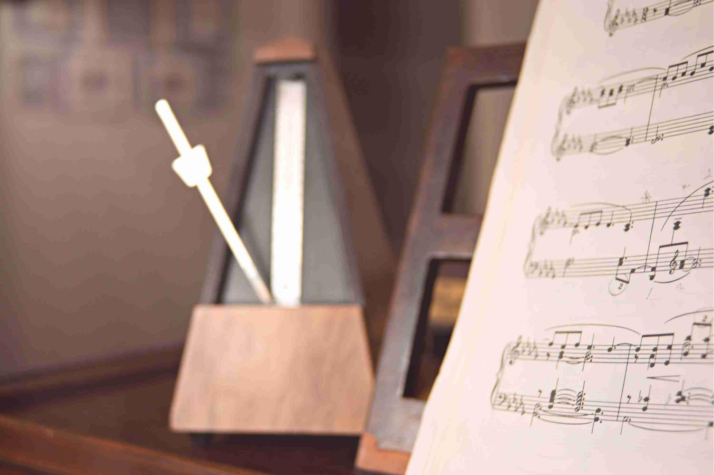
Composition instruction at Ars Musica Studio covers the essential foundations of musical writing:
Understanding chord structures, progressions, and the logic of musical language from the common practice period to more contemporary approaches.
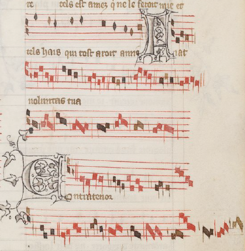
The art of combining independent melodic lines, drawn from the polyphonic tradition, with direct application to the construction of rich, coherent musical texture.
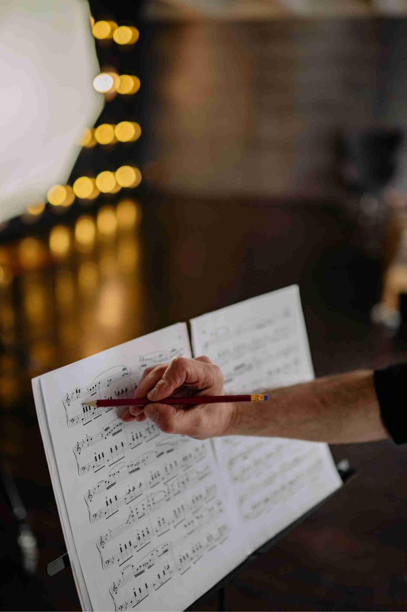
How music is organised in time: phrase structure, sectional forms, and the larger architectural decisions that shape a piece.
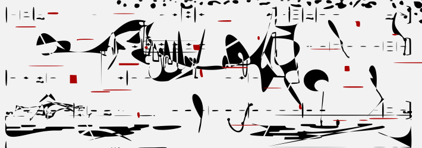
Navigating the full spectrum of Western musical thought, from modality to functional tonality to more ambiguous harmonic territories.
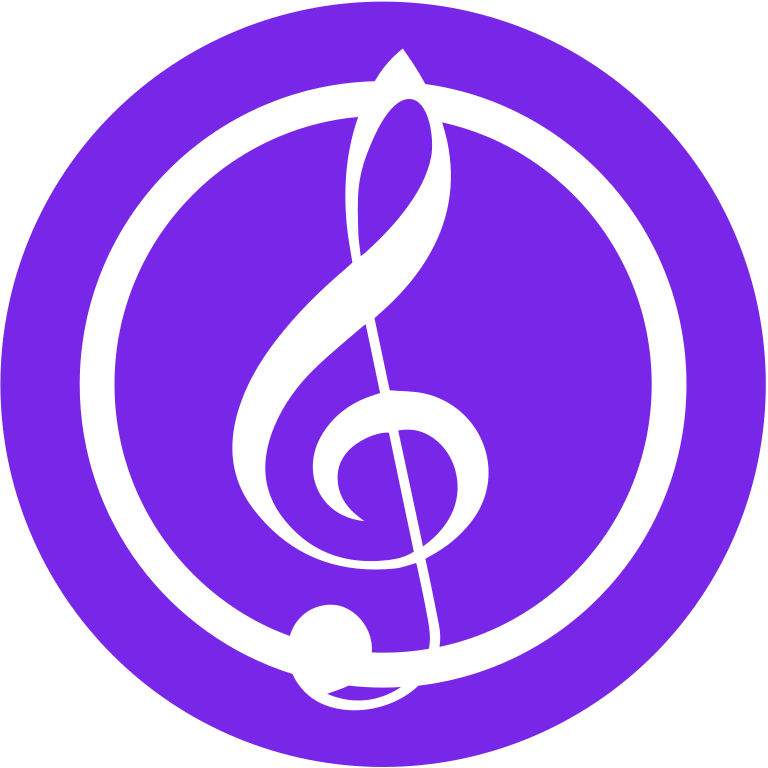
Practical work using Sibelius or MuseScore to notate, hear, and refine compositions in progress.
Instruction is guided as much as possible by each student's own musical references and interests — while ensuring that the work builds genuine breadth and a solid compositional foundation.
Composition lessons at Ars Musica Studio are open to:
A basic familiarity with music notation is helpful, though not strictly required. What matters most is genuine curiosity, a willingness to listen broadly, and the patience to work carefully with musical ideas.
Composition cannot be rushed. It is a discipline that rewards those who are willing to think slowly.Composition lesson rates are determined by the student's commitment tier, reviewed at the end of each term. Greater engagement means lower tuition.
| Tier | Description | Rate |
|---|---|---|
| Tier 1 — Exceptional Commitment | Exemplary dedication, consistent creative work, rapid progress, full respect for schedule and assignments. | $15/h |
| Tier 2 — Strong Commitment | Regular work between lessons, excellent attendance, visible progress and a positive, attentive attitude. | $16.50/h |
| Tier 3 — Consistent Engagement | Shows up prepared most weeks, some lapses in creative work, good attitude, consistent improvement. | $18/h |
| Tier 4 — Moderate Engagement | Engaged but inconsistent, occasional preparation, minor issues with attendance or assignments. | $19.50/h |
| Tier 5 — Low Engagement | Rarely prepared, misses lessons frequently, minimal progress or unclear commitment. | $21/h |
| Tier 6 — Minimal Engagement | Minimal effort or preparation, recurring cancellations, unclear goals or disinterest. | $24/h |
If composition study at Ars Musica Studio feels like the right fit, the first step is simple: get in touch. You may use the Contact page to introduce yourself. Share a few words about your musical background, what you already compose or create if anything, and what draws you to study composition seriously. There is no need to impress — only to be honest.
Every serious journey begins with a quiet step.Reflections, updates, and notes from the studio
March 17th, 2026
There is something particular about the space between terms. Lessons pause. The studio quiets. And in that brief interval, it becomes possible to look back at the weeks that have passed — not to measure results, but to take stock of something less tangible: the quality of attention that was brought to the work.
At Ars Musica Studio, Term 3 has been a period of steady, serious effort. Students returned each week to the same disciplines — scales, technique, repertoire, listening — and something accumulated. Not always visibly, not always quickly, but genuinely. That is how musical growth tends to work. It resists display. It reveals itself slowly, in the grain of the sound, in the confidence of a phrase, in the ease with which a student now approaches something that once seemed impossible. This is the kind of progress the studio was built to cultivate.
Term 4 opens on April 1st — and it carries quiet significance. When it closes in June, it will mark the end of Ars Musica Studio's first full year of teaching. That is not nothing. A first year is where the foundations are laid: the habits, the standards, the relationship between teacher and student that makes genuine musical development possible. Much of that work is invisible from the outside. It happens in the lesson, in the practice room, in the small daily decisions a student makes about how seriously to take the work in front of them. What becomes visible, over time, is the result of all those quiet decisions compounded.
The studio remains a small, deliberately intimate space. Teaching here is individual, unhurried, and held to a consistent standard — not because rigour is valued for its own sake, but because music deserves to be approached with care. There is no syllabus designed for speed, no curriculum built around performance milestones or external examinations. There is simply the work: the instrument, the sound, the student, and the long patience required to develop something real.
If you have been considering beginning violin study — or returning to it after time away — Term 4 is a natural moment to enquire. Lessons are available for students of varying ages and experience levels, from adult beginners to more advanced young musicians. What is asked of every student is the same: seriousness of intent, consistency of effort, and a willingness to listen. Not talent. Not prior experience. Willingness.
Music is not a skill to display. It is a language to inhabit — and like any language, it asks time, humility, and daily practice before it begins to feel truly one's own. Term 4 begins shortly. The work continues.
— Ars Musica Studio, Siem Reap
February 17th, 2026
Ars Musica Studio is pleased to welcome Clara as the newest member of our musical community.
Each new student brings more than an instrument. They bring a way of listening, a way of asking questions, a way of discovering sound. The studio grows not by numbers, but by the seriousness and sincerity of those who enter it.
Clara begins her journey with us this term. As with all new students, she joins under the principles that shape our work:
At Ars Musica Studio, progress is not measured only by repertoire, but by the cultivation of discipline, care, and thoughtful practice. The violin is approached not as an object to master quickly, but as a language to inhabit patiently. We look forward to accompanying Clara as she develops her technique, her ear, and her artistic voice in the months ahead.
Welcome to the work, Clara.
January 1st, 2026
Welcome to 2026 — and to Term 2.
With the beginning of 2026, Ars Musica Studio enters a new season of study. The turning of a calendar does not change the nature of the work. Scales remain scales. Bow holds still require attention. Intonation still demands patience. Yet there is something valuable in marking a new year: a renewed clarity of intention.
Term 2 begins with the same principles that guide all our work:
The first term of the academic year has laid foundations. Term 2 builds upon them. Students are encouraged to begin this new season with: a refreshed practice routine, clear weekly goals, honest reflection on strengths and weaknesses, and a willingness to work slowly and precisely.
Progress in music is cumulative. What is practiced in January shapes what is possible in June. To all students and families: thank you for your trust and steadiness. May 2026 be a year of deeper listening, greater responsibility, and meaningful artistic growth. Let us continue.
August 1st, 2025
Today marks the very first day of teaching under the name Ars Musica Studio. A quiet, beautiful beginning. One student, one violin, one hour of music carefully unwrapped.
Earlier this morning, I gave the first official lesson to a returning student whose curiosity and warmth I remember well from past years. We tuned, we played, we listened. It was a session filled with gentle rediscovery — of the instrument, of sound, of intention. There was no rush, no pressure — only the calm spark of a new cycle starting.
As of this writing, I am still finalising a dedicated space for the studio's work. But the spirit is already here: in the care we take, in the attention we give, in the trust placed in the process. Ars Musica Studio isn't built in a day — it's built in every lesson, in every gesture that honours the craft.
To all who may one day walk through this door — thank you in advance for your courage, your patience, and your music.
Let this be the first of many.
Simon Gilbert is a classically trained violinist and teacher with roots in Belgium and a mission grounded in Cambodia. After years of study and performance across Europe, he chose to dedicate his path to teaching music as a form of dialogue: between gesture and tone, tradition and personal voice. His approach is thoughtful, poetic, and exacting — inviting students not simply to play, but to mean something through music. Ars Musica Studio is the result of that vision: a place where students are taken seriously, technique is taught with care, and classical music is treated not as entertainment, but as an expressive art form with the power to shape one's thinking, discipline, and sense of self.
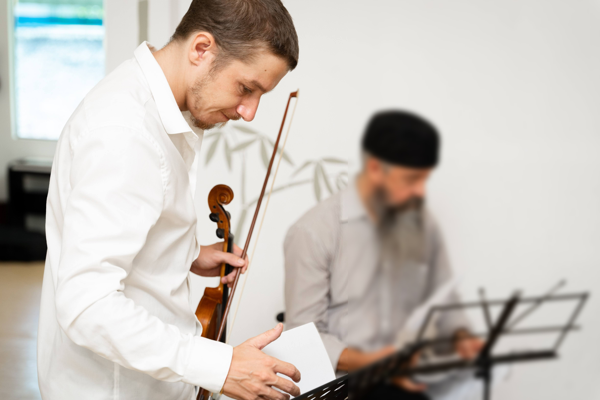
Music takes time. Our lessons begin with awareness — of posture, of gesture, of sound itself. Mastery is not rushed. It is shaped through quiet repetition and attentive feedback.
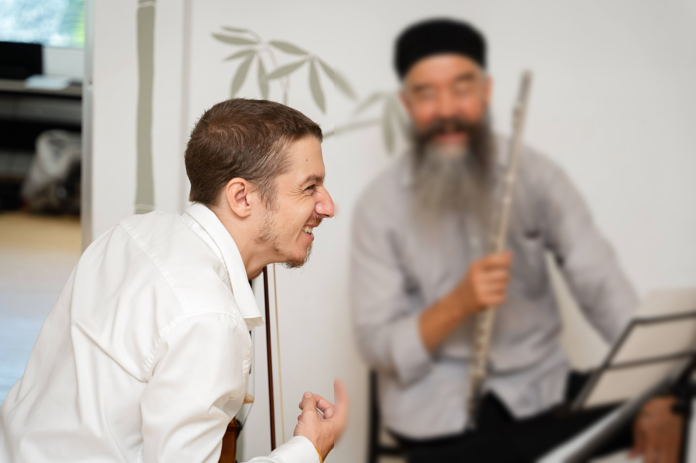
We teach music as a language — one with grammar, intention, and emotional resonance. Students are invited to understand what they play, not just memorise it.
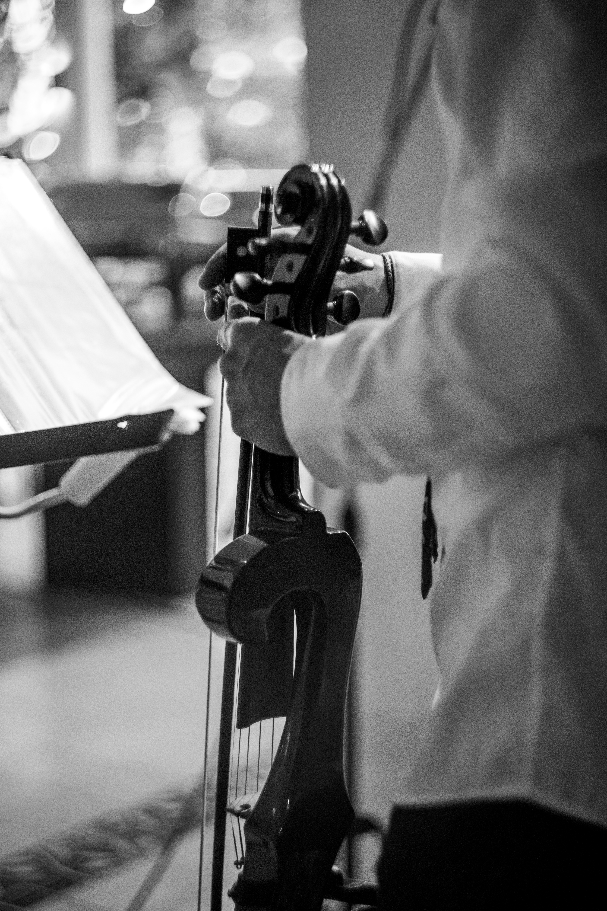
Whether you play for life or simply for a few seasons, the goal is the same: to leave changed. To have learned not just a skill, but a new way of listening, expressing, and being.
Ars Musica Studio welcomes sincere questions from anyone wishing to learn more about our philosophy, approach, or availability. Whether you're a parent exploring options for your child, an adult considering the violin for the first time, or simply curious about how our commitment-based model works — you're invited to reach out. This page is not a registration form. It is a space for dialogue — for asking, clarifying, and beginning the conversation with care. I personally read and respond to each message.
Music begins with listening. So does teaching.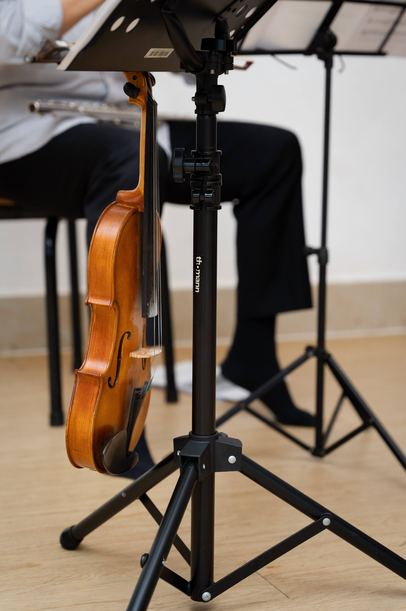
Have a question before registering? I'd be glad to hear from you.
For availability, programme information, or to discuss a specific project or event, please get in touch directly. I read and respond to each enquiry personally.
Whether you are enquiring about an Anima performance, a jazz ensemble, a classical concert, or a collaboration, please include a few words about the context, the date, and the nature of the event. The more specific you are, the more useful my response will be.
Every serious project begins with a conversation.Bookings, availability, and artistic enquiries.